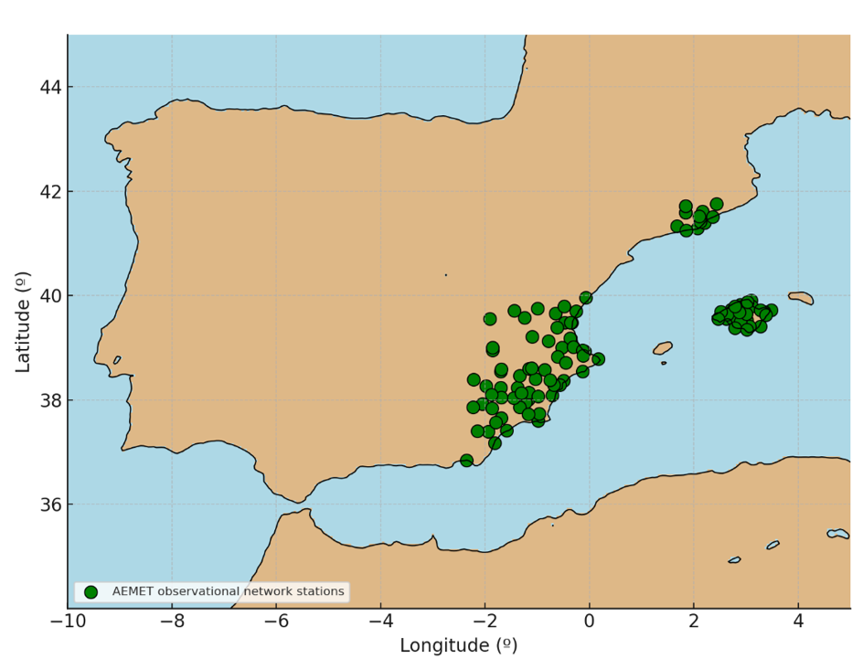

METHODS
As an extension of the Evaluation section, an evaluation of hourly precipitation data from several high-resolution reanalysis products based on the AEMET observation station network has been carried out. This is of particular interest for extreme precipitation events, since the Mediterranean region is one of the areas in Europe with the highest precipitation intensity, which is primarily from convective precipitation. These types of events are often associated with cut-off lows or DANAS (isolated high-altitude depressions) in areas near the western Mediterranean due to the interaction with the relatively high temperatures of the Mediterranean, which favor the development of deep convection. Although the number of studies examining these events from a climatic perspective has increased in recent years, many works use reanalysis data, especially low-resolution and daily data.
This study used hourly observational precipitation data from the AEMET internal network, with at least 50% of station data available for areas of the Spanish Mediterranean, as well as hourly reanalysis data from various products (ERA5, ERA5-Land, CERRA, and COSMO-REA6). Comparative metrics were applied across all datasets, specifically p90, p95, and a distribution density analysis. Finally, specific cases of particular interest were examined. For more information about the data and methodology, see Data and Evaluation sections.
